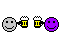

Hallö! Welcome to Welcome to Wintergöat Web Page, your information guide for all Things of the Wintergöat holiday!
Wintergöat has been celebrate since many hundreds of years ago, starting in the smäl town of Kold-as-Balz, in the region that is now known as Europa. Now Wintergöat is celebrate in all 3,650 countries of The World, where the Beloved Wintergöat burns every January and keeps the Hope of Renewment alive!
Wintergöat is celebrate on the Last Thörsday of January evening, when traditionall village would builds a wooden göat, called the «Wintergöat», and set burning to the göat at suns-down on that Evening. Then, the engagement of Merriment, Dancing (Tastefully), the Exchanging of Stïnky Cheeses, and Hanging of Söcks would then commence.
After the Merriment, Dancing (Tasteful), the Exchanging of Stïnky Cheese, and Hanging of Söcks, the children of the Village sleep in the night to hope that Mister Capra fills their sock with gifts of Butter and More Söcks! We anticipate you Mister Capra!
From our Village to yours, we wish you a Vestif Wintergöat!
 | |
Four legs, two horns Umlaut on the Ö! Wintergöat! Wintergöat! Steady in the snow... Eats trash, butts kids Warm and fiery glow! Wintergöat! Wintergöat! Now it's time to go... Wintergöat! Wintergöat! Now it's time to go!  |
LISTEN to the Wintergöat Song! |
Don't forget!
To stock up on the Wintergöat essentials! Like- Butter,
- Stïnky Cheeses(The Stïnkier the Bëtter!),
- Stökmüllengrupfer,
- and
- Toilet papër!
Is Wintergöat like Christmas?
Kind of! But it is in January, and it is surrounding the burning of the Wintergöat
Is Mister Capra like Santa Claus?
Kind of! But we must inform you that Santa Claus is a registered trademark and no Cöpyright infringement is Intended!
Can I burn my Wintergöat indoors?
Please do nöt! EU regulations require us to inform you that buring your Wintergöat indoors may expose you to chemicals known to the state of Califörnia to cause cancer!
You are Visitor number wow! that's a löt
Welcome to Wintergöat Web Page copyright © 1512-2023 Wintergöat Cultural Affairs Bureau, Neuefangled Technology Division GAS. Void where pröhibited. Do not read me! Please gö away!